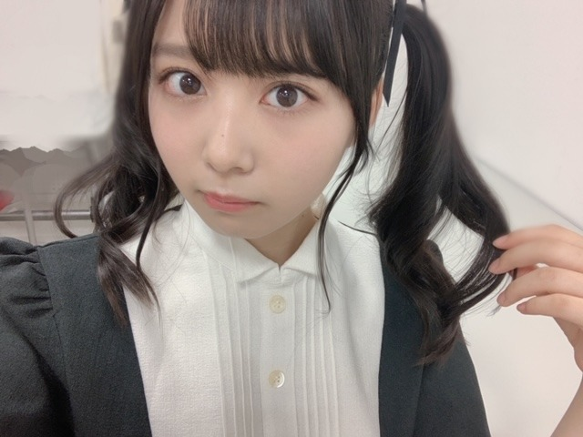
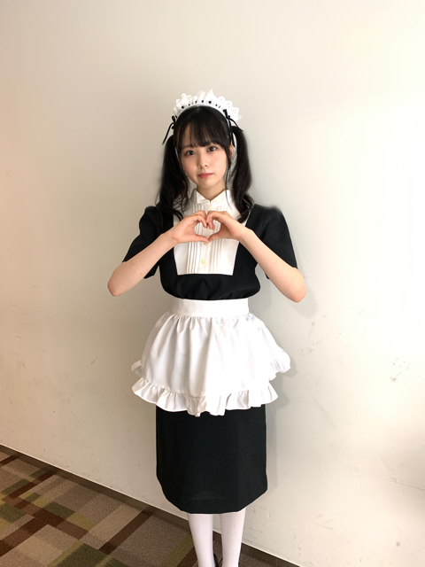
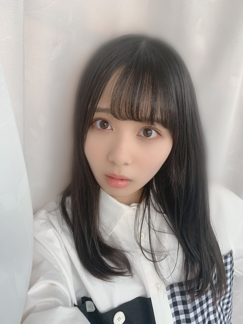
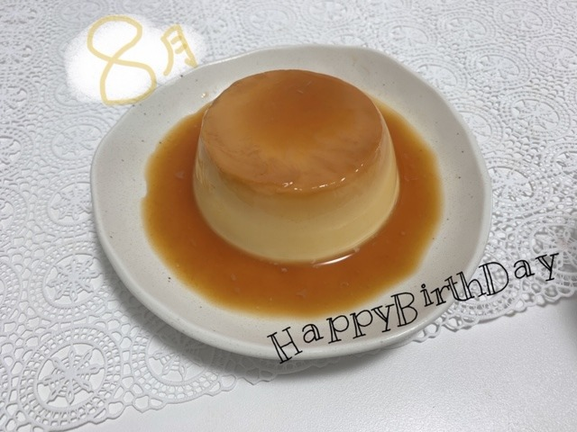
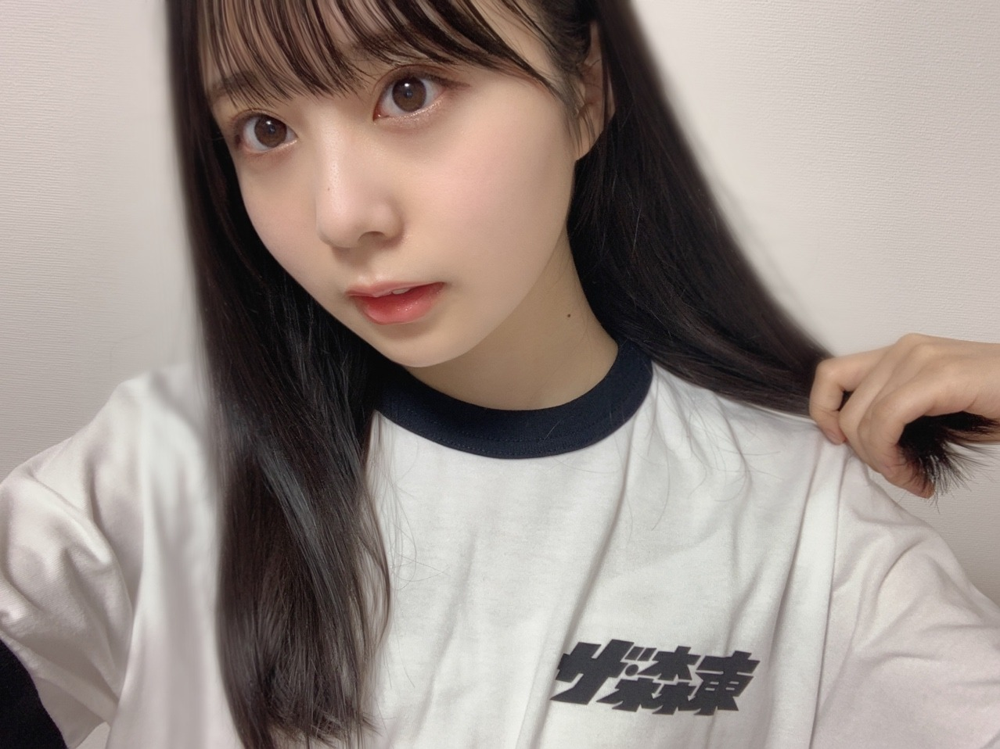

2020/0831Mon8月31日という響き。佐藤璃果
こんにちは~
乃木坂46 （新）4期生 岩手県出身
佐藤璃果です。

リカロット
高めのツインテールは
あまりしないから新鮮でした~( ˊ꒳ˋ )
ちょっと恥ずかしかったけど似合うねって
みんなが褒めてくれて助かりました。
8月24日 25:29~放送だった
｢ノギザカスキッツ｣
今回は
早川聖来ちゃんと、筒井あやめちゃん、
東ブクロさんとコントをしました。
お嬢様の素敵な歌声とギャップ
OL筒井ちゃんの淡々具合
ヒガシチャンの、ははっ！お嬢様
面白かったですね。

マネージャーさんに撮って頂いたのですが、
メイドのポーズって何ですかね
となった時に、
ハートじゃないか！となり、
ハートポーズをしましたが、
たぶん、メイド喫茶の方のポーズですよね
若干ハートの形が変なメイドです
いつか行ってみたいね~と地元の友人と
話していたのが懐かしいです。
もっと全力で振り切って、
皆さんに楽しんでいただけるように
なりたいです。
今夜もノギザカスキッツ25:29~
見れる方は是非。楽しみましょう！
これからも
どんな事でも全力で努めます。
よろしくお願いします
~~~~~~~~~~~~~~~~~~~

ワンピースお気に入りなのです。
8月27日25:00～
乃木坂46のオールナイトニッポンの
新4期生コーナーに出ておりました！
新内眞衣さん、賀喜遥香ちゃん、
ありがとうございました
初ラジオでした。
とても、緊張しましたが、
新しいことに挑戦できて嬉しかったです。
自分の感情を自分の口から
咄嗟に出すのは難しいですね、
貴重な経験になりました！
ありがとうございました。
そして、ラジオ繋がりで、
〇9月6日
乃木坂46の「の」
毎週日曜日 18時00分から放送
にて岩本蓮加さんと2人トークを
させて頂きました！
岩本さんとお話出来て嬉しい気持ちと
もうドキドキで...
美人さんでした本当に。
ちゃんと話せていただろうかと、
自分で放送を聞くのも
緊張します。
アドバイスを頂いたので、この経験を
無駄にしないように、していきたいです！
無駄にしないで｢宝｣にしたいです。
~~~~~~~~~~~~~~~~~~~
8月27日、松村沙友理さん
❁お誕生日おめでとうございます❁
松村さんの何をしても可愛くなるところ、
笑顔が本当に素敵で、
お口がハート型になるところも
好きです！
白雪姫みたいに白くて、お顔が小さくて、
スタイルが良くて...
はっっ！！可愛い！っといつも心の中では
なっておりました。
これからお話出来たら嬉しいです。
よろしくお願いします。
素敵な一年になりますように！
~~~~~~~~~~~~~~~~~~~
そして、8月生まれの皆さん！！
お誕生日おめでとうございました。
わーい！
8月生まれの皆さんに贈る
今回の誕生日ケーキはプリンです。
ずっと作ってみたかったんです。

プリンプリンプリンプリン
電子レンジで出来るし、材料も少ないし、
とてもオススメです~◎
~~~~~~~~~~~~~~~~~~~
質問コーナーは次回にまた( ˙꒳˙ )
コメントありがとうございます。
今日は8月最後の日。
何故かは分かりませんが、8月31日という
響き、、良くないですか？
今日、8月31日の特に好き花言葉は、
ハイビスカス❁です。
調べてみてくださいね~
温かい気持ちになれるはず︎︎︎︎︎☺︎
~~~~~~~~~~~~~~~~~~~
皆さんにとって
素敵な一日になりますように！
最近の幸せはね、
遠くの友達が送ってくれた
贅沢なバスボムや入浴剤を使って、
改めてお風呂の時間の楽しさを
身に染みて感じた時~。
あと、リップスクラブの美味しさを
噛み締めた時です！

さらば青春の光さんから
Tシャツを頂きました！
ありがとうございました( . .)"
大切に使わせていただきます。
そして、8月23日は森田さんの
お誕生日でしたね！
おめでとうございました。
練習している時から面白くて
ふふふとなってしまいます。
いつも温かいアトバイス
ありがとうございます。
素敵な1年になりますように！
それではみなさん
またね~
#26

PROFILE
新4期生リレー
202104
| SUN | MON | TUE | WED | THU | FRI | SAT |
|---|---|---|---|---|---|---|
| 1 | 2 | 3 | ||||
| 4 | 5 | 6 | 7 | 8 | 9 | 10 |
| 11 | 12 | 13 | 14 | 15 | 16 | 17 |
| 18 | 19 | 20 | 21 | 22 | 23 | 24 |
| 25 | 26 | 27 | 28 | 29 | 30 | |

コメント(314)
しぃなちゃんの生誕グッズ届いたよー！
大事に使わせてもらいます！笑
会える日を本当に楽しみにしてます！
これからも頑張ってねー！
ゆっちゃんより。
いかがお過ごしでしょうか？
僕はまだ微かに聴こえるセムの鳴き声を聴きながら過ごしています。
8月も今日で終わりだね。
明日からは9月になりますね。
僕は秋が好きなので、紅葉した景色を見るのを毎年楽しみにしています。
質問コーナーお願いいたします
Qトランペットで演奏が得意な楽曲はありますか？
Q最近読んだ本はありますか？
Qだいたい就寝時間は何時頃が多いですか？
Q好きな食べ物教えてください！
良かったらお答えお願いします！
また土曜日も楽しみにしています！
またねー！
PS.裸足でななよだ(きょうすけ)
いつも璃果ちゃんのおかげで頑張れてます！
またねー！
PS.裸足でななよだ(きょうすけ)
コメント空いちゃってごめんねー！
高めツインテール可愛い！
っていうかメイド可愛い！笑握手会でも見てみたい…笑
8月もう終わりだねー…でも残暑にはお互い気をつけましょー！
ではでは！またブログ来ますね！
ドラゴン22
またいろんなコントした璃果ちゃん見たいなぁ笑笑
ノギスキ見たよ！面白かったし、めちゃくちゃ可愛かった〜新4期もどんどんコントに参加してるから毎回楽しみです。さらに振り切れたりかちゃんとか絶対面白い笑早く見たいね〜
のぎののも楽しみにしてるね！リアルタイムで聞くよ〜！
感想は次のブログで書くね。それではまた。
りかちゃん今日も暑い中お仕事お疲れ様です
今日もお仕事でした。
凄く疲れました。
やっと少しずつお仕事に慣れました
毎日覚えることが多くて大変です。
りかちゃんはお仕事はどうですか？
私は凄く疲れます。
体調を崩さないように気をつけています。
これからもお仕事頑張って下さい。
自分もお仕事頑張ります。
これからのブログを楽しみにしてます。
メイド似合いすぎ！まじめっちゃ可愛い！
高めツインめっちゃ好きやから最高やわ
ほんま何しても可愛いなぁ笑
ノギスキ今日だね！見るよ〜
メイドさんのポーズか笑
なんだろうね？まぁ可愛いからなんでもいいや笑
メイド喫茶とか行ったことないんですよね笑
ワンピースいいね！似合ってるよ
オールナイトニッポン聞いたよ！
今度はゲストさんで呼んでもらえるといいね！
さらばさんのTシャツみんなもらってるね
それも似合ってるよ
またブログ更新楽しみにしてます！
(=ﾟωﾟ)ﾉﾎﾅ､ﾏﾀ!!
お疲れ様。
モバメ始まったらどんなメールを送りたいですか？
可愛い写真たくさんくれると嬉しいな。
リカロット似合いすぎてつらい…笑
乃木のの楽しみ、絶対聴く！
大学のオンラインテスト時間内に受けられなくて落単ほぼ確で落ち込んでたけど、璃果ちゃんのおかげで元気が出たよ！(深刻さが足りない)
リカロットめちゃくちゃ可愛かったです！！
オールナイトニッポンお疲れ様！
璃果ちゃんの声も大好きだああ(●︎´▽︎`●︎)
璃果ちゃんお料理作るの上手だから料理のレシピとか作り方とかのブログあげて欲しいな！！！
9月も頑張ろ~！！！
真奈より
ブログ更新してくれてありがとう！！♡♡♡♡♡ ノギザカスキッツのリカロットもう可愛すぎる♡♡♡♡♡♡♡高めのツインテールが似合いすぎる♡♡♡♡♡もうだいちゅきのちゅきちゅきだーーーーーーーーーーーーいちゅきっ！！！♡♡♡♡♡♡♡♡♡♡♡んんんんんんんんん♡♡♡♡♡♡♡♡♡♡りかちゃんは世界一可愛いっ！！♡♡♡♡またリカロット楽しみにしてるね♡♡♡♡♡♡♡♡ノギザカスキッツでまた世界一可愛いりかちゃん楽しみしにしてるね♡♡♡♡♡♡♡♡♡♡
次のブログ更新楽しみにしてるね♡♡♡♡♡♡♡♡♡♡
だいだいだーーーーーーーーーーーーーーーーいちゅきっ！！！♡♡♡♡♡♡♡♡♡♡♡♡♡♡♡♡♡♡♡♡♡
リカロット可愛すぎました！
すごくキュンキュンしてしまいました。
ノギザカスキッツが毎週の楽しみです。
本当に楽しい番組をありがとうございます！
まだまだ暑い日が続きますが、お身体に気をつけて頑張ってください。応援しています！
大好きです。
ノギスキりかちゃん可愛すぎやろー
キュン死やわ〜
学生のころは、8月31日嫌いだったな～。璃果ちゃんはどう？
またねっ
♭26 ひでき
りかちゃんに早く会ってみたァァァい……
スキッツがんばっていますね
そして、日曜日は「のぎのの」ですね
楽しみにしています‼︎
璃果ちゃんブログ更新ありがとう〜
璃果ちゃんにメイドってイメージがなかったから、めっちゃ新鮮で可愛すぎました！それにコントとして面白かったんで、2回目も期待してます笑
もう8月が終わるっていう実感が前々から言ってるんやけど、全くないんよねぇ。今年は祭りとかなかったからかな？？
明日からもう9月やけど、璃果ちゃんは9月といえば何を思いつきますか？？
自分は某ハンバーガー店の月見バーガーなんやけど笑
んじゃもう8月も終わりやけど、こっからまた頑張っていこー
ノギスキりかちゃん可愛すぎやろー
キュン死やわ〜
リカロット可愛すぎて惚れました笑笑
巻いてあるツインテールめっちゃめっちゃ似合ってたよ！！
質問〇璃果ちゃんは秋の味覚といったら何が最初に思い浮かぶ？？
〇璃果ちゃんは料理上手だから秋だからこそ作りたい料理とかってある？？
〇璃果ちゃんが作ったプリンは固めですか？？
璃果ちゃんにとってより良い日々になりますように！
ゴードンでした！！
ブログ更新ありがとう
凄いですね〜なんだか、可愛さが洗練されてきた気がします。
ANNの時の服が、すごくオシャレで、可愛くて、
私服なのかなーー？？って疑問でした。
お気に入りのお洋服だったんですね〜とっても可愛いです。
会いに行きたくなる可愛さ。
ノギザカスキッツのリカロットはとても良かったです。
メイドさんも常識ないパターンのやつ！をうまく演じてたと思います。
乃木坂工事中でさ、松村さんを見つけたときに、
可愛い！！の演技をしよう！ってシーンがあったじゃないですか
それに近いなーって思いました。
璃果ちゃんて演技力が高いですよね〜
すごく感じています。
璃果ちゃん初の個人PV、「eclipse」
しあわせの保護色の特典映像のやつね。
あれが僕は本当に大好きなんですよ。
璃果ちゃんを好きになったきっかけのひとつと言ってもいい！
演技力の高さと、そこに込められるひとつひとつの想い。
人間の願いを大切に出来る子だなと感じました。
本当に大好きなんですよ！！
ブログでも、余裕があれば、
ちょっと懐かしい話になってしまうけど、
個人PV eclipseの話をしてくれたら嬉しいです。
月が綺麗ですねに対して、うまく答えられなかった女の子
もしかしたら、本当はわかってたんじゃないかなって思うんですよ。
でも、照れ隠しというか、そんな感じの反応なのかなって。
どうでしょう。
璃果ちゃんは、理系、だけど、本とかお話とか、好きですか？
こうして、ブログとコメントだけのやりとり
5日おきの文通みたいなもんだけど、
璃果ちゃんの心の近さは少しずつ感じられている気がします。
だから、文からもちゃんと、伝わってますよ。
こちらも一生懸命書いています！
どうかなーー届けーー！と思ってね。
地味だけど、続けていきましょう。
絶対乗り切れるまで、ついて行きますから。
安心してくださいね〜
それでは、また5日後に。
かがやき
のぎのの楽しみにしてるね！
りかちゃん可愛いすぎるー
またコメントします！
メイド璃果ちゃんものすごく可愛いです！
リカロット可愛かったよ！
次のスキッツも楽しみー
ANNお疲れ様！今度はゲストとして出てくれる日を楽しみにしてるよ
あとのぎののも！
暑さ、コロナに気をつけてお仕事頑張ってね！！！
次の更新も待ってまーす
目、凄い素敵っす
コント良かったね(笑)めっちゃ面白かった
リカロットが本当に可愛くて大好きです
コントも面白くて最高でしたー
のぎのの絶対聴きます
どんな話が出てくるのか、楽しみににしてるね。
じゃ、また今度もコメントします～
ブログ更新ありがとう！！質問なんだけど、リカロットは何歳の設定だったの？？めちゃ幼く見えたからお嬢より年下かと思った 教えてくれ〜！！！
ブログ更新ありがとうございます
リカロット、可愛すぎてSNSのアイコンにもしています(；＿；)
なんてかわいいの、、♡
大好きです
またお写真みたいな、、！
.
◯璃果ちゃんの「ハーフツインテール」がとってもとってもすごく見たいです。良ければお願いします、、！
.
◯璃果ちゃんは何のジュースが好きですか？
ドリンクバーでよく何頼むのか知りたいです(；＿；)
体感佐藤璃果したい、、、()
ちなみに私はオレンジジュースしか勝たんって感じです()美味しいです
今日も世界で1番璃果ちゃんが大好きな1日でした
今度のEX大衆楽しみにしてるね〜〜！
大好きです
リカロットとても可愛かったです。
乃木坂ANN聞きました～！
週末の乃木ののも楽しみにしてますね
ブログ更新ありがとう♡
大丈夫だよ
リカロットちゃんの自撮り見たかったから嬉しい！
宮城でも遅れてノギスキ放送始まったから、しっかり観るね！
ワンピースもかわいい♡
りかちゃんたくさんお仕事お疲れさま〜☺︎
質問
◯今、何が食べたいですか？
◯外ハネが見てみたいです！
岩手のおとなり宮城から応援してます☺︎
れな
ラジオ聞きました、可愛かった〜！
リカロットのメイド姿本当に可愛くて、、、
ずっとして欲しかったツインテールが見れて幸せです！
これからも応援しています！
この前のノギザカスキッツのリカロットもANNも最高でした！それと同時にこういう感じで見ることができるのがなんかすごい嬉しい笑それと確かにメイドのポーズって考えてみると難しいかも()
プリンも美味しそうやしバスボムとかで日常をちょっと豪華にしてちょっとした贅に浸るのってめっちゃ幸せよねぇ〜めっちゃ分かる☺︎
またのぎののも楽しみやしこれからも無理しない程度に頑張ってください！また待ってます！
質問:ポストカードのお勧めの飾り方教えてください！！璃果ちゃんのBRODYのやつとか色々飾りたい！
リカロット凄く可愛いかってです！
自分は８月誕生日だったんで、プリンありがとう！
いつか販売して欲しいですね！笑
段々とりかちゃんが番組になれてきて、楽しそうにしているの見て、笑顔になれます！
これからも、色々なコントに挑戦して、りかちゃんの事を新発見出来るの楽しみにしてますね！
リカロットちゃんの自撮り見たかったから嬉しい！
宮城でも遅れてノギスキ放送始まったから、しっかり観るね！
ワンピースもかわいい♡
りかちゃんたくさんお仕事お疲れさま〜☺︎
質問
◯今、何が食べたいですか？
◯外ハネが見てみたいです！
岩手のおとなり宮城から応援してます☺︎
れな
コメントする